Micronesia Island State Analysis
MA615 Final Project
Introduction
Project Overview: An In-Depth Introduction
This project aims to provide users with comprehensive information about the Federated States of Micronesia. It is structured into several key sections to facilitate a thorough understanding of the nation:
General Description:
This section offers insights into the geographical location, political landscape, economic status, historical development, culture, and surrounding environment of the Federated States of Micronesia. This foundational knowledge sets the stage for a deeper exploration of the nation.
Key Demographics:
Here, the focus shifts to the demographic profile of Micronesia. This includes detailed information on population composition, growth trends, gender ratios, and life expectancy, offering a clear picture of the nation’s social structure.
Comparison with Other Regional Island States:
In this segment, the Federated States of Micronesia is compared with neighboring countries such as the Marshall Islands, Nauru, and Palau. This comparison is based on social and economic indicators, providing a regional perspective and highlighting the relative development of these island nations.
SWOT Analysis:
The final section presents a SWOT analysis, examining the strengths, weaknesses, opportunities, and potential threats related to the Federated States of Micronesia. This analysis aims to offer a balanced view of the nation’s current status and prospects for future development.
Backgroud Information of Micronesia, Fed. Sts.
The Federated States of Micronesia (FSM), also known as Micronesia, is an island country in the Pacific Ocean’s Micronesia subregion. It consists of four states - Yap, Chuuk, Pohnpei, and Kosrae - spanning about 607 islands across 2,700 km near the equator. These islands are situated northeast of Indonesia and Papua New Guinea, and south of Guam. Although the FSM’s land area is only about 702 km², its marine territory covers nearly 3 million km², ranking it 14th in the world for its exclusive economic zone.
Palikir on Pohnpei Island is the capital, while Weno in Chuuk is the largest city. Each state centers around volcanic islands, with many outlying atolls, especially in the Caroline Islands region. The term ‘Micronesia’ often refers to either the FSM or the broader region comprising several countries.
Formerly under U.S. administration as part of the Trust Territory of the Pacific Islands, FSM gained sovereignty on November 3, 1986, through a Compact of Free Association with the U.S., after establishing its constitution on May 10, 1979. It’s a United Nations member and part of the Pacific Community since 1983.
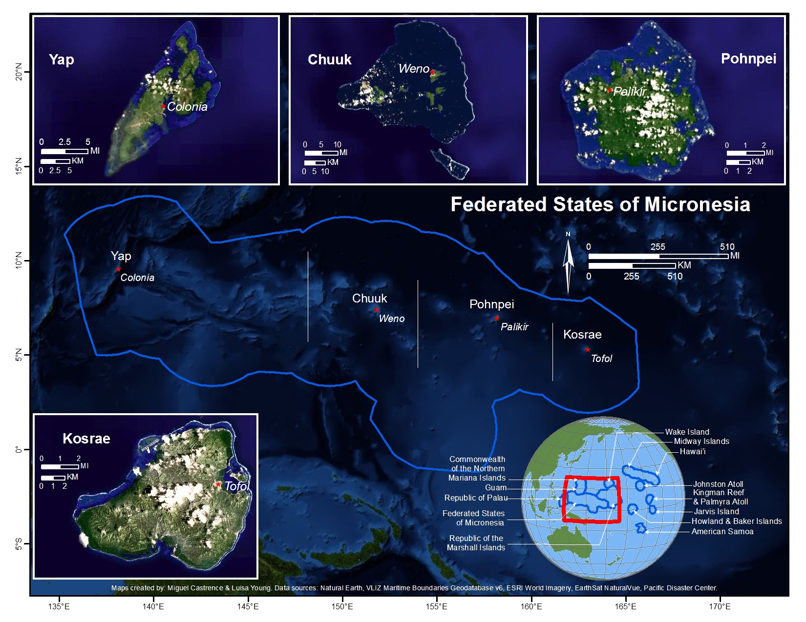
General Description
Map of the Island State
This map provides a detailed view of the Federated States of Micronesia, highlighting its four states - Pohnpei, Chuuk, Kosrae, and Yap.
Pohnpei
Chuuk
Kosrae
Yap
World Map Highlighting the Island State’s Location
This detailed map provides a clear visualization of the geographical positions of the four states - Pohnpei, Chuuk, Kosrae, and Yap - on the global landscape. Each state is distinctly color-coded for easy identification: Pohnpei in vibrant red, Chuuk in a deep blue, Kosrae in a lush green, and Yap in a bright yellow.
Economic Characteristics of the Island State
This section primarily explores the economic status of the Federated States of Micronesia. Users can engage with an array of charts depicting various economic indicators, such as GDP and its growth rate, per capita GDP, and import-export values.
GDP
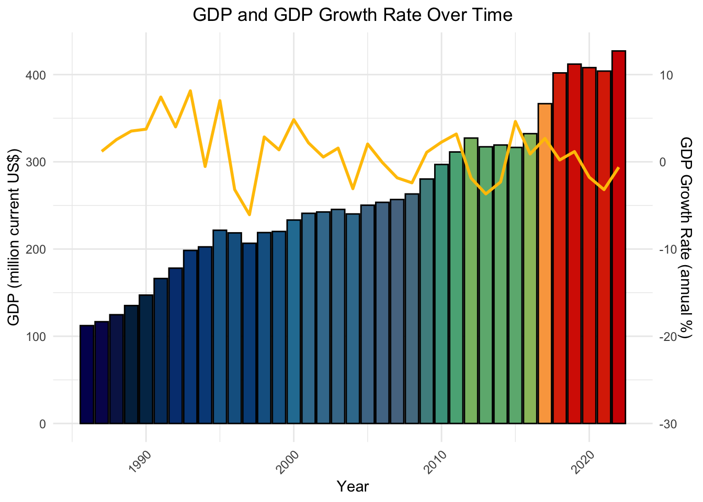
GDP Per Capita
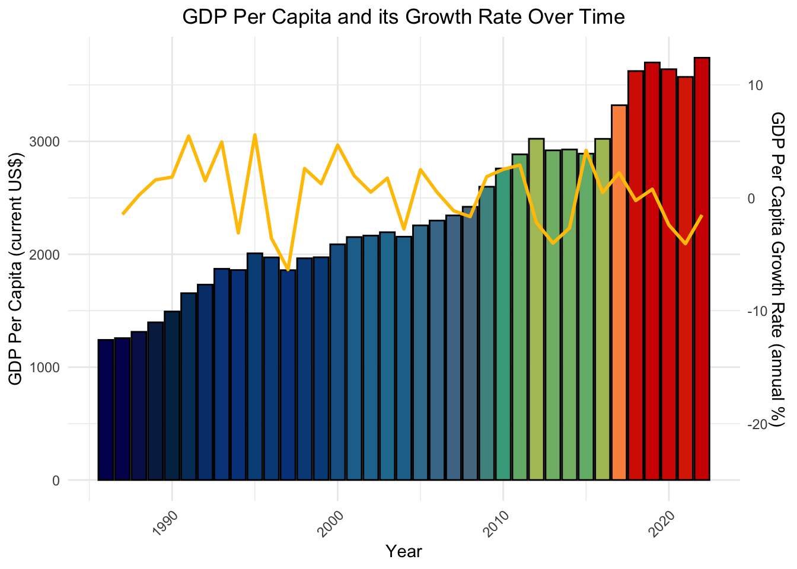
Export and Import
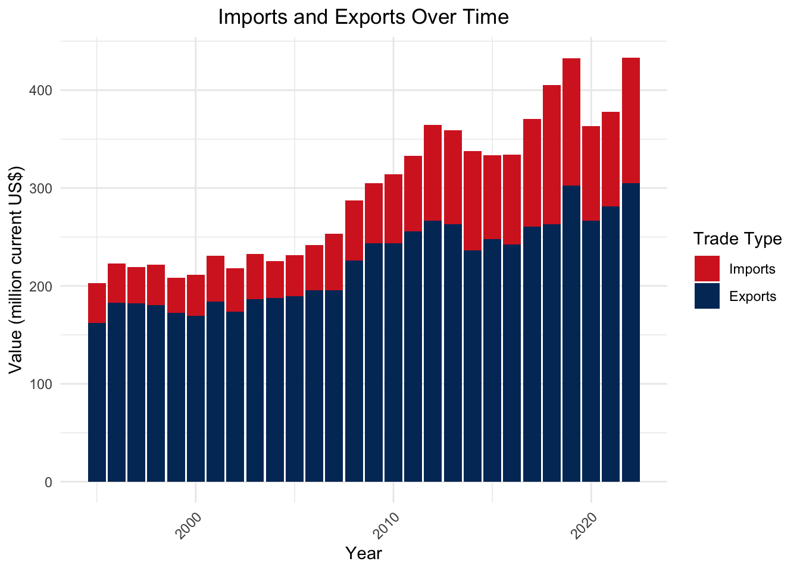
Overview of Political, Social, Cultural, and Other Aspects
This section will offer a brief overview of additional relevant information pertaining to the Federated States of Micronesia:
Politics
Gained independence from US-administered Trust Territory of the Pacific Islands in 1986. It’s a democratic nation with a Compact of Free Association with the United States.
Economy
Relies on subsistence farming, fishing, and US financial aid. Limited natural resources; potential for tourism development is hindered by remoteness.
History
Inhabited for over 4,000 years; influenced by Spanish, German, and Japanese rule. Significant World War II site.
Population and Culture
Predominantly Micronesian population, with diverse ethnolinguistic groups. Rich in traditions and customs, with notable sites like Yap’s Rai stones and Pohnpei’s Nan Madol ruins.
Environment
Tropical rainforest climate, characterized by high rainfall, lush landscapes, and unique ecosystems.

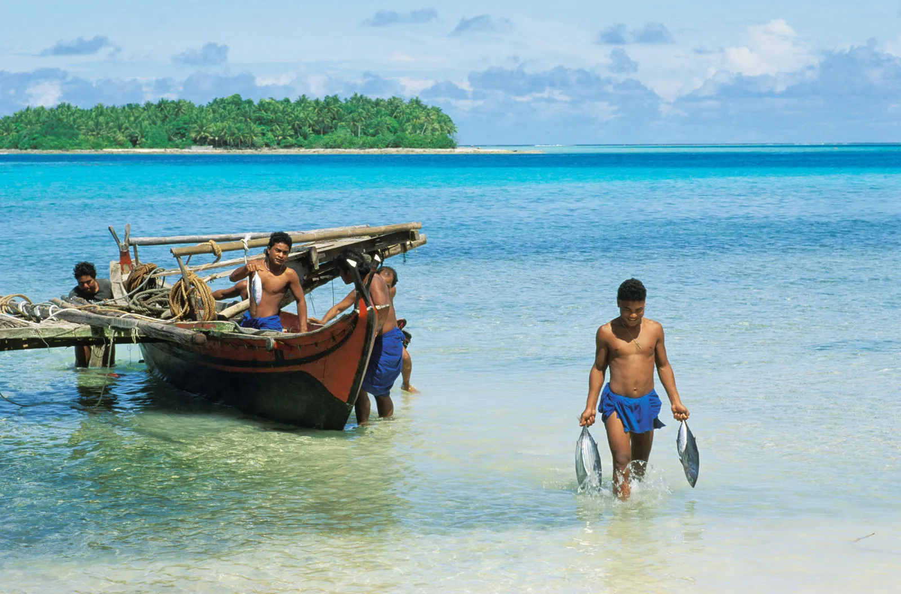
Key Demographics
Population and its Growth Rate
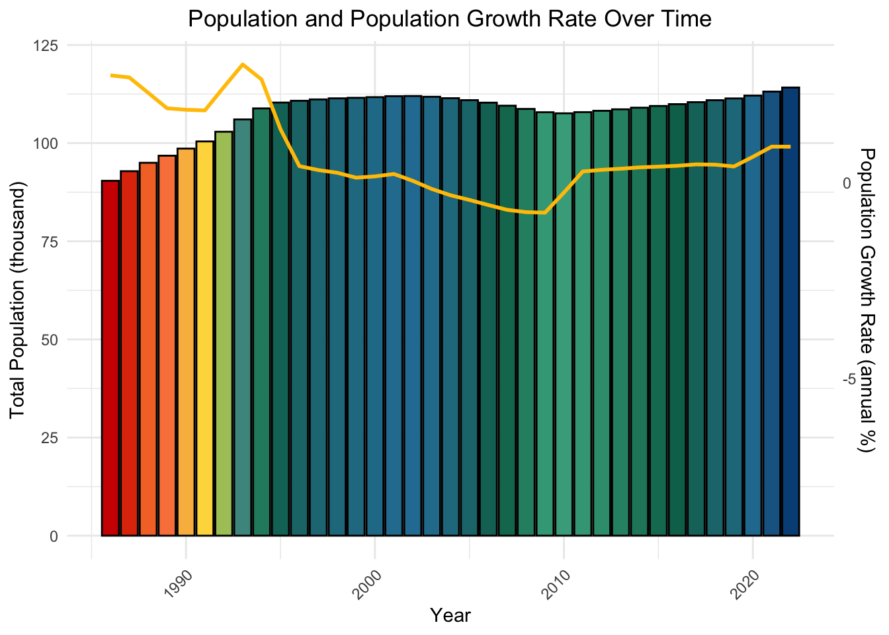
Demographic Composition
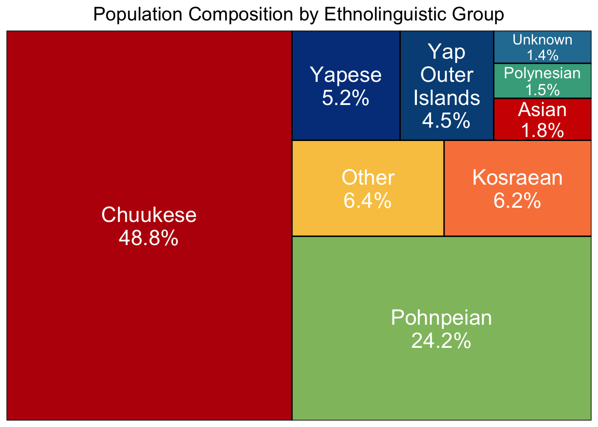
Male vs Female
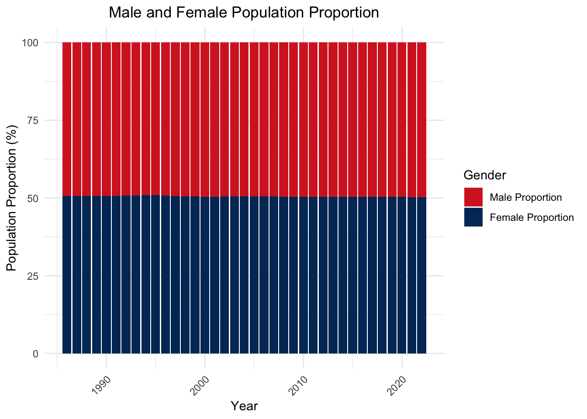
Life expectancy
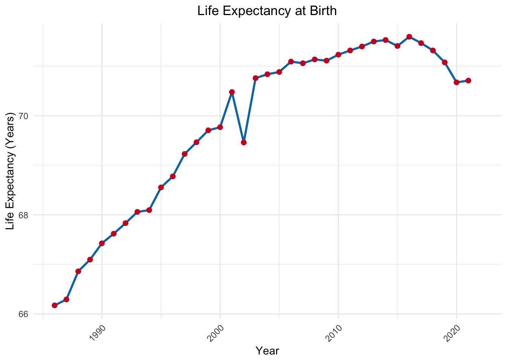
Comparison with Other Regional Island States
| Regional Island States: A Comparison of Social Indicators | ||||||||||
| Country | Population (2022) | Population growth (annual %, 2022) | Pop. density (per km^2, 2021) | Net migration (2021) | Life Expectancy at Birth, Total (years, 2021) | Sex ratio (male per 100 female, 2022) | Surface Area (km^2) | Human Development Index (2021) | Capital City | Currency |
|---|---|---|---|---|---|---|---|---|---|---|
| Micronesia, Fed. Sts. | 114164 | 0.9 | 166.1 | -635 | 71 | 103.4 | 702 | 0.628 | Palikir | USD |
| Marshall Islands | 41569 | -1.2 | 331.2 | -1901 | 65 | 104.0 | 181 | 0.639 | Majuro | USD |
| Nauru | 12668 | 1.2 | 543.6 | -66 | 64 | 101.8 | 21 | 0.720 | Yaren | AUD |
| Palau | 18055 | 0.2 | 39.5 | 3 | 69 | 106.0 | 459 | 0.767 | Ngerulmud | USD |
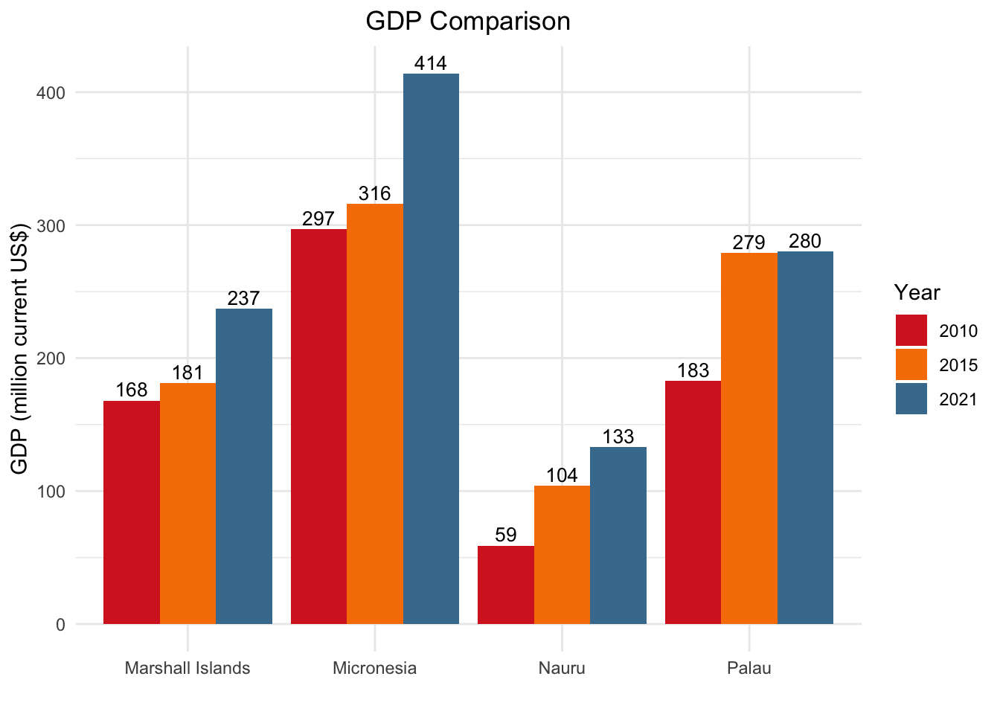
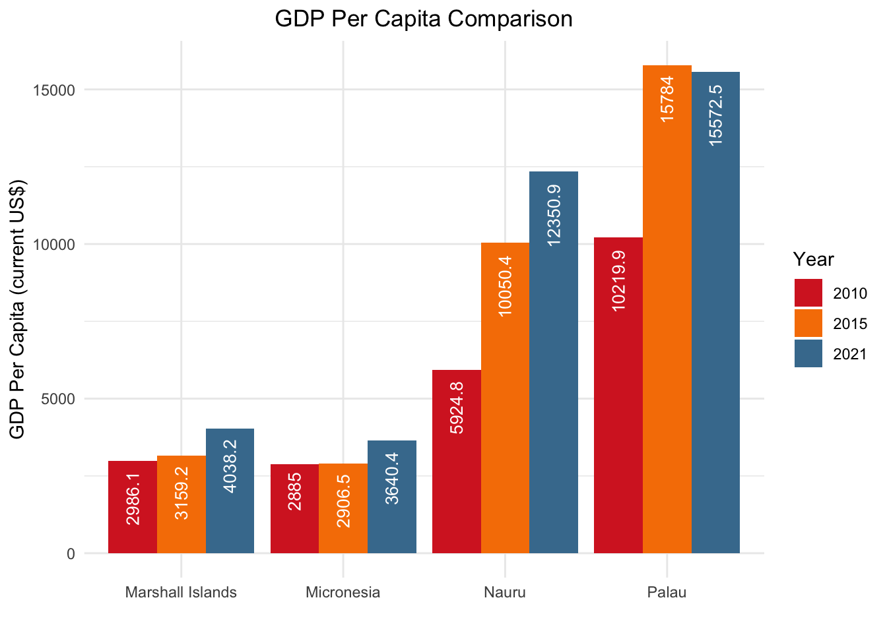
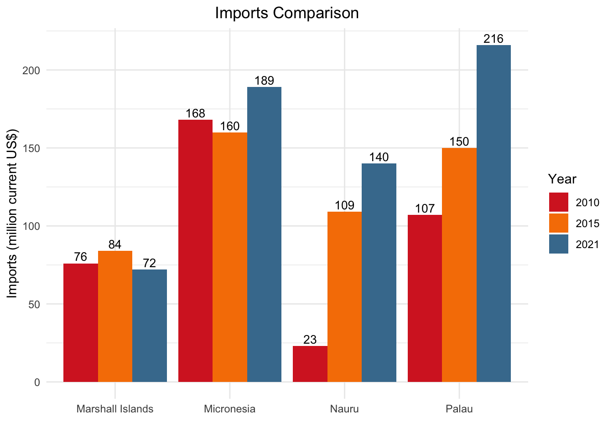
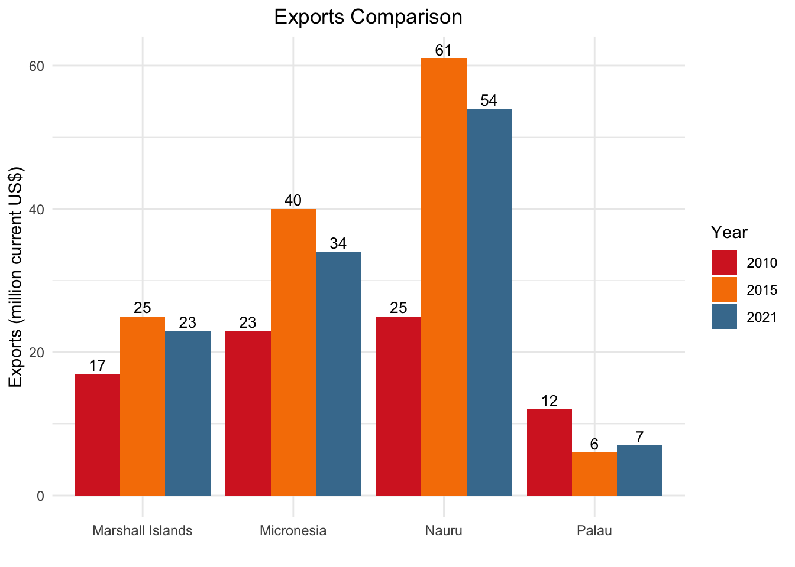
SWOT Analysis
Strengths:
Strategic Location: Situated in the Western Pacific Ocean, Micronesia’s extensive exclusive economic zone offers significant marine resources.
U.S. Support: The Compact of Free Association with the United States provides substantial financial aid and development support.
Natural Resources: The primary economic sector is commercial fishing, with significant income from fishing rights sales and offshore corporate registrations for captive insurance.
Low Debt Levels: FSM has a relatively low government debt-to-GDP ratio, indicating financial stability.
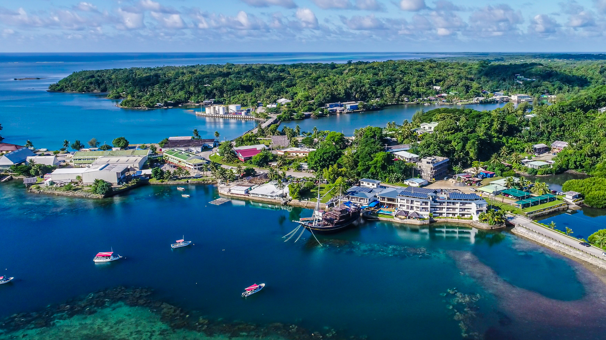
Weaknesses:
Economic Dependence: Heavy reliance on U.S. funding and grants, with a need to diversify economic sources.
Limited Foreign Investment: Restrictions on foreign ownership and challenges in registering businesses deter foreign direct investment.
Weak Infrastructure: Poor infrastructure and high costs of imported goods and services hamper economic growth.
Subsistence Economy: Apart from a few urban centers, most of the economy is subsistence-based, limiting commercial activity.
Opportunities:
Economic Diversification: Opportunities to diversify the economy beyond fishing and government employment.
Tourism Potential: Natural beauty and unique culture offer potential for eco-tourism development.
Trust Fund Utilization: Transitioning to using proceeds from a trust fund developed from U.S. contributions for development.

Threats:
Reduction in Compact Funding: The shift in Compact funding methodology in 2023 poses financial challenges.
Political Instability: Lack of political parties and potential for instability could affect economic decisions.
Environmental Risks: As an island nation, Micronesia faces significant risks from climate change and natural disasters.
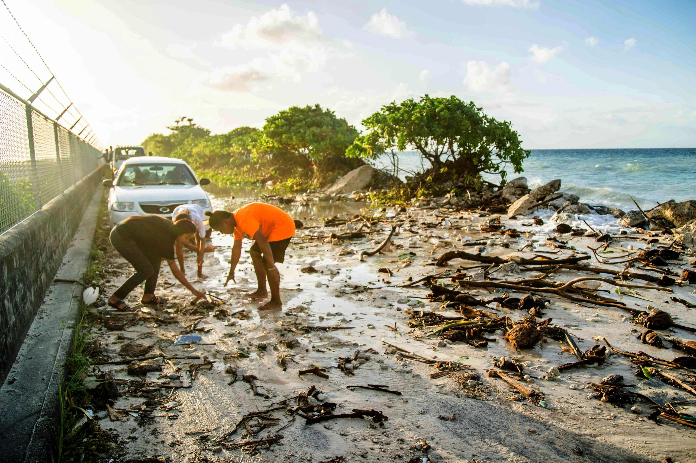
Reference
Wikipedia - Federated States of Micronesia
Wikipedia - Administrative divisions of the Federated States of Micronesia
Federated States of Micronesia - Spotlight shines brightly on "The Big Ocean State"
US Department of State - 2021 Investment Climate Statements: Micronesia
Lastly, I would like to extend my profound gratitude to GPT-4 for its invaluable assistance in debugging my work.